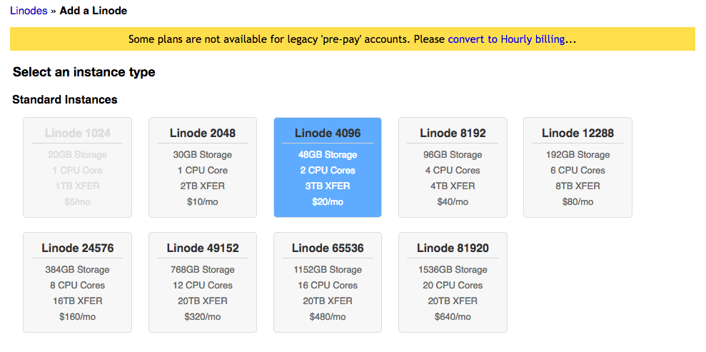
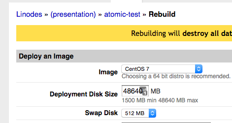
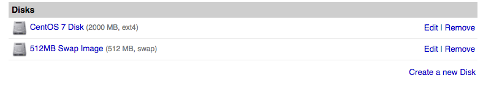
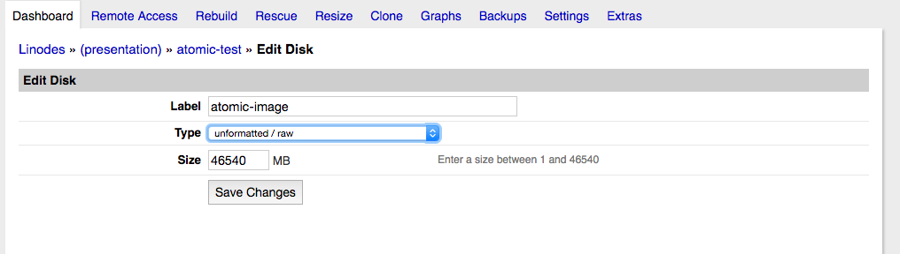
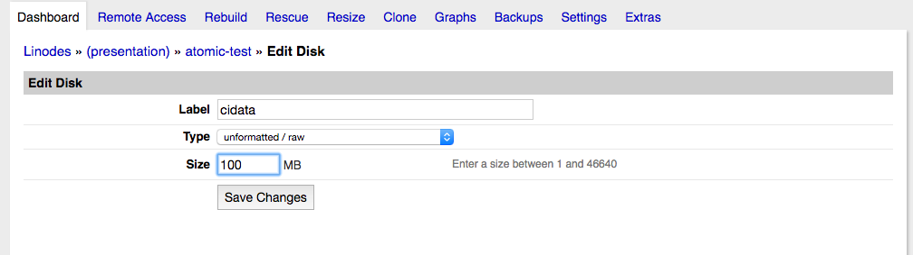
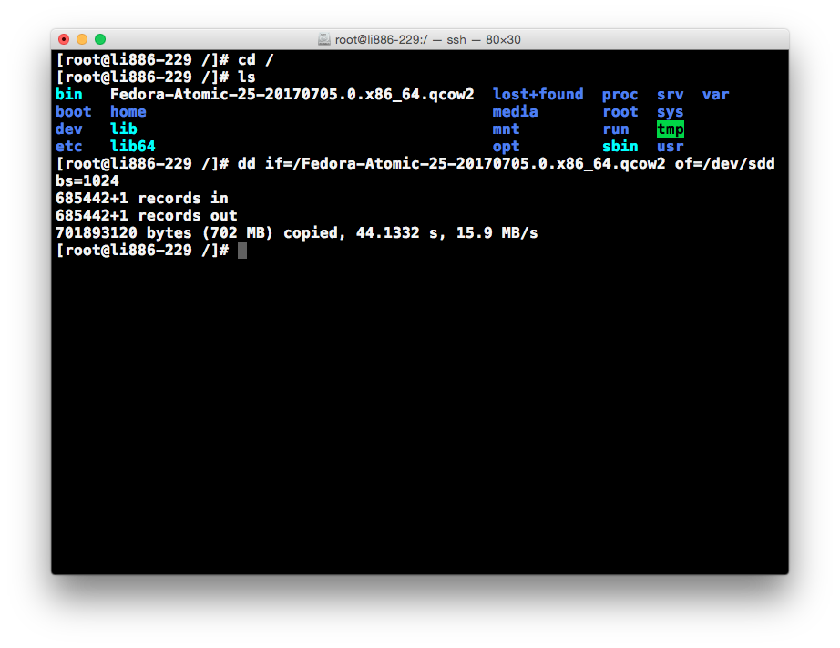

“Rebuild”

cidata volume – 100Mimage volume – Rest of space


Full-virtualizationAtomic Configuration ProfileFull-virtualizationBootstrapping Profilecidata volumeput this in /etc/sysctl.d/99-noipv6.conf
net.ipv6.conf.all.disable_ipv6 = 1
net.ipv6.conf.default.disable_ipv6 = 1
meta-data – Machine identificationuser-data – Cloud-init configurationmeta-dataContents:
instance-id: atomic-F329-458F-AB4E-147410BC283F
local-hostname: atomic.example.com
The field instance-id is a unique identifer for the machine.
Cloud init only runs once based on instance-id.
user-datauser-data
#cloud-config
user: goozbach
ssh_pwauth: False
ssh_authorized_keys:
- '<USERKEY1>'
- '<USERKEY2>'
ssh_keys:
rsa_private: |
<INSERT CONTENTS HERE>
rsa_public: <PUBKEY GOES HERE>
ecdsa_private: |
<INSERT CONTENTS HERE>
ecdsa_public: <PUBKEY GOES HERE>
ed25519_private: |
<INSERT CONTENTS HERE>
ed25519_public: <PUBKEY GOES HERE>
cidata partitionMount the cidata partition
Copy meta-data and user-data files into partiion
Unmount partition
atomic disk
Atomic Configuration profile.